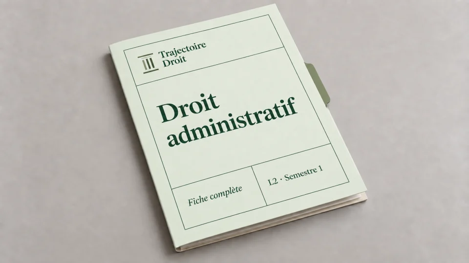

L'exception d'illégalité et la théorie de l'écran législatif
L'exception d'illégalité permet de faire écarter un acte administratif illégal à l'occasion d'un autre procès, sans l'attaquer directement par un recours pour excès de pouvoir. Contre un règlement, on peut l'invoquer sans limite de temps. Contre un acte individuel, elle reste possible seulement pendant un certain temps. La théorie de l'écran législatif limite pourtant ce moyen dans un cas. L'inconstitutionnalité d'un acte, c'est sa contradiction avec la Constitution. Quand un acte se contente d'appliquer une loi, on ne peut pas invoquer son inconstitutionnalité.

Les fiches complètes de droit administratif L2
Les deux fiches de droit administratif L2 traitent chacune une moitié de cette page
La fiche du semestre 1 explique la théorie de la loi-écran au chapitre 11, consacré aux sources constitutionnelles de la légalité. Selon cette théorie, le juge administratif refuse de contrôler la conformité à la Constitution d'un acte qui applique fidèlement une loi. L'exception d'illégalité est traitée dans la fiche du semestre 2, avec l'acte administratif unilatéral et le recours pour excès de pouvoir.
- 122 pages pour le semestre 1 et 110 pages pour le semestre 2
- Le pack complet (29,98 €) réunit les deux fiches, les flashcards, les fiches d'arrêt et les cas pratiques corrigés
- Accès à vie et mises à jour comprises
Paiement sécurisé. Tes fichiers sont envoyés par email dès la confirmation.
L'exception d'illégalité, écarter un acte sans demander son annulation
Le recours pour excès de pouvoir vise directement un acte pour obtenir son annulation. L'exception d'illégalité fonctionne autrement, donc il faut bien distinguer les deux en cas pratique.
Prenons un agent public qui conteste devant le juge administratif une sanction prise contre lui. Cette sanction repose elle-même sur un acte plus ancien, souvent un règlement. Un règlement est un texte général pris par l'administration. Si l'agent pense que ce règlement est illégal, il peut le dire dans le procès qu'il mène déjà, sans engager de recours séparé contre ce règlement. On dit alors qu'il soulève son illégalité par voie d'exception. Le juge se contente d'écarter l'acte pour cette affaire, sans l'annuler. La sanction qui s'appuyait sur ce règlement perd donc son fondement juridique.
Attention, écarter et annuler sont deux choses différentes. Le juge écarte l'acte sans l'annuler. Le règlement illégal reste donc en vigueur après le procès. Il continue de s'appliquer à tout le monde, sauf dans le litige où l'exception a été soulevée.
Pourquoi ce moyen existe à côté du recours pour excès de pouvoir
Le recours pour excès de pouvoir contre un règlement doit être formé dans les deux mois. Passé ce délai, plus personne ne peut demander son annulation, même si le règlement est manifestement contraire à la loi. Un texte illégal que personne n'a attaqué à temps peut pourtant servir de base à des décisions individuelles pendant des années. Sans l'exception d'illégalité, il ne pourrait donc plus jamais être contesté. L'exception d'illégalité corrige ce défaut. Le délai pour demander l'annulation du règlement reste expiré. En revanche, une personne peut faire écarter ce règlement chaque fois qu'on le lui applique dans un litige.

Fiche complète
Droit administratif L2 S1
Le régime dépend entièrement de la nature de l'acte
En cas pratique, il faut donc d'abord qualifier l'acte dont on soulève l'illégalité. En effet, le régime change selon qu'il s'agit d'un règlement ou d'un acte individuel.
Contre un acte réglementaire, aucune limite de temps
Un règlement s'applique à un nombre indéterminé de personnes, et il continue de servir de base à des décisions individuelles bien après la fin de son propre délai de recours. C'est pourquoi on peut invoquer son illégalité par voie d'exception sans limite de temps, tant qu'il sert de fondement à des décisions.
Cette règle a une exception, qui oppose deux familles de vices. La légalité externe concerne la façon dont l'acte a été pris. La légalité interne concerne le contenu de l'acte.
Le Conseil d'État a cependant limité ce principe dans un arrêt du 18 mai 2018, Fédération des finances et des affaires économiques CFDT (n°411045 et 414583). Cet arrêt a été rendu par l'Assemblée du contentieux, la formation la plus solennelle du Conseil d'État. Il a jugé que les vices de forme et de procédure ne peuvent plus être invoqués par cette voie une fois le délai de recours direct expiré. Ces vices font partie de la légalité externe. L'incompétence de l'auteur de l'acte relève aussi de la légalité externe, mais l'arrêt la laisse de côté. Elle peut donc toujours être invoquée par voie d'exception. En revanche, les vices de fond restent invocables sans limite de temps. Ils relèvent de la légalité interne.
Contre un acte individuel, seulement tant qu'il n'est pas devenu définitif
Une décision individuelle, elle, concerne seulement une ou quelques personnes désignées nommément. La sécurité juridique de ces personnes justifie donc une règle plus stricte. On peut invoquer l'illégalité d'un acte individuel par voie d'exception seulement tant qu'il n'est pas devenu définitif. L'acte devient définitif quand son propre délai de recours a expiré. De plus, le Conseil d'État a précisé cette exigence par un arrêt du 27 février 2019 (n°418950). Quand l'acte n'indique pas les voies et délais de recours, la jurisprudence Czabaj de 2016 fixe un délai raisonnable d'un an. L'arrêt de 2019 applique ce délai à l'exception d'illégalité. Ainsi, une fois ce délai passé, l'acte individuel ne peut plus être contesté, ni directement, ni par voie d'exception.
| Nature de l'acte | Exception d'illégalité recevable |
|---|---|
| Acte réglementaire, légalité interne | Sans limite de temps, tant que l'acte sert de fondement à une décision |
| Acte réglementaire, vice de forme ou de procédure | Seulement dans le délai de recours direct depuis l'arrêt CFDT Finances de 2018 |
| Acte individuel | Seulement tant que l'acte n'est pas devenu définitif (délai de recours, ou délai raisonnable d'un an) |
La théorie de l'écran législatif, une limite propre au contrôle de constitutionnalité
L'exception d'illégalité est une façon d'agir. La théorie de l'écran législatif, elle, limite les arguments invocables contre certains actes, par voie d'exception comme par un recours direct.
Le juge administratif refuse de contrôler la conformité d'une loi à la Constitution, et ce contrôle appartient aujourd'hui au seul Conseil constitutionnel. Quand un acte administratif se contente d'appliquer strictement une loi, sans aucune liberté de choix sur le point contesté, le juge administratif refuse aussi de contrôler la constitutionnalité de cet acte. En effet, s'il acceptait de le faire, il jugerait en réalité la loi elle-même à travers l'acte qui l'applique, alors que ce contrôle ne lui revient pas. Le Conseil d'État a posé cette règle dès l'arrêt Arrighi (CE, 6 novembre 1936).
La loi fait écran entre la Constitution et l'acte administratif qui l'applique. Autrement dit, tu ne peux pas contester la loi devant le juge administratif en attaquant seulement l'acte qui l'applique.
Ce que l'écran législatif laisse possible
En cas pratique, il faut délimiter exactement ce que couvre cette théorie, car elle est souvent appliquée trop largement. L'écran législatif bloque seulement le moyen tiré de l'inconstitutionnalité de l'acte. Tous les autres moyens restent recevables. On peut ainsi invoquer la violation de la loi elle-même ou l'incompétence de l'auteur de l'acte. Un vice de forme ou la contradiction avec un traité international restent aussi invocables. Un règlement pris en stricte application d'une loi peut donc être contesté sur tous ces points. Seul l'argument tiré de la Constitution est écarté.
L'écran législatif a d'abord existé aussi face aux traités, avant d'être abandonné sur ce terrain
Le contrôle de conventionnalité, c'est le contrôle d'une loi par rapport à un traité. Le Conseil d'État a longtemps appliqué le même raisonnement à ce contrôle. Avec la jurisprudence Sémoules (CE, 1er mars 1968), il refusait ainsi d'écarter une loi contraire à un traité quand cette loi avait été votée après le traité, exactement comme en matière constitutionnelle. Il a abandonné cette position par l'arrêt Nicolo (CE, Ass., 20 octobre 1989), que j'analyse en détail sur ma page consacrée à l'arrêt Nicolo. Depuis Nicolo, l'écran législatif ne joue donc plus face à un traité. Il joue en revanche toujours face à la Constitution. Depuis 1989, les deux contrôles suivent donc des règles différentes.
L'écran transparent, l'exception posée par l'arrêt Quintin
Le Conseil d'État a lui-même prévu une exception à sa théorie de l'écran. Dans ce cas précis, la théorie ne s'applique pas.
Une loi d'habilitation est une loi qui charge le gouvernement (le pouvoir réglementaire) de fixer certaines règles. Dans l'arrêt Quintin (CE, Ass., 17 mai 1991), le Conseil d'État a jugé qu'un décret pris sur le fondement d'une telle loi pouvait être directement contrôlé par rapport à la Constitution. Il faut pour cela que la loi soit restée muette sur les conditions de fond. Dans cette affaire, en effet, un préfet avait refusé un certificat d'urbanisme en s'appuyant sur un décret qui fixait une distance minimale par rapport à une zone déjà urbanisée. La loi qui habilitait ce décret ne disait rien sur cette distance, donc elle laissait le pouvoir réglementaire entièrement libre sur ce point. Le Conseil d'État en a déduit que la règle contestée venait en réalité du décret. L'écran devenait ainsi transparent, et le juge a accepté de contrôler le décret directement par rapport à la Constitution. Si l'énoncé présente une loi d'habilitation vague ou muette sur le point contesté, il faut donc toujours se demander si la règle vient de la loi elle-même ou si le pouvoir réglementaire l'a créée seul.
Cette exception dépend d'une seule question, qui a réellement fixé la règle contestée. Si la loi encadre précisément le point en cause, l'écran reste opaque. On peut alors invoquer la Constitution seulement par une QPC (question prioritaire de constitutionnalité) contre la loi elle-même. Si la loi se tait ou reste trop générale sur ce point, et que l'acte administratif a créé la règle, l'écran devient au contraire transparent. On peut donc attaquer directement cet acte pour inconstitutionnalité.
La QPC, le moyen de contester la loi elle-même depuis 2010
L'écran transparent reste limité aux cas où la loi ne dit rien. Face à une loi qui encadre précisément la règle contestée, la révision constitutionnelle de 2008 a créé un autre outil.
La question prioritaire de constitutionnalité (QPC) existe depuis le 1er mars 2010. Avec elle, une partie peut contester la constitutionnalité d'une loi au cours d'un procès, en demandant que cette loi soit soumise au Conseil constitutionnel. La loi elle-même est alors attaquée, par une procédure séparée qui remonte jusqu'au juge constitutionnel. Ma page sur la question prioritaire de constitutionnalité détaille toute la procédure, avec les critères de filtrage et les délais. La QPC ajoute donc une autre voie, et l'écran législatif reste en place. L'écran empêche de faire juger la loi à travers l'acte, alors que la QPC permet de la faire juger directement. La dissertation corrigée sur le Conseil d'État et la loi replace cette évolution dans un sujet de dissertation corrigé pas à pas.
Un exemple pour enchaîner les trois notions
Karim est ingénieur dans un établissement public. Il est licencié sur le fondement d'un décret qui organise les conditions de rupture du contrat des agents de son statut. Il conteste ce licenciement devant le tribunal administratif, dans le délai de deux mois.
Premier réflexe : la nature de l'acte attaqué. Le licenciement de Karim est un acte individuel, encore dans son délai de recours, donc Karim peut l'attaquer directement. De plus, il veut contester le décret qui a servi de fondement à cette décision. Ce décret est un acte réglementaire. Il soulève donc l'illégalité de ce décret par voie d'exception, dans le même procès, sans engager de recours séparé contre lui.
Deuxième réflexe : ce que Karim peut invoquer contre le décret. Supposons qu'il soutienne que le décret viole un principe constitutionnel. Tout dépend alors de ce que dit la loi d'habilitation. Si cette loi fixait déjà précisément les conditions de rupture du contrat, et que le décret se contente de les reprendre, l'écran législatif s'applique. Le tribunal administratif refusera donc d'examiner ce moyen d'inconstitutionnalité, car il jugerait alors la loi elle-même. Karim devra alors demander une QPC contre la loi elle-même.
Troisième réflexe : l'hypothèse inverse. Supposons maintenant que la loi d'habilitation se contentait de renvoyer au pouvoir réglementaire le soin de fixer les conditions de rupture, sans rien préciser sur ce point. Dans ce cas, le décret a créé lui-même la règle contestée. L'écran devient donc transparent, comme dans l'arrêt Quintin. Le tribunal administratif peut ainsi contrôler directement le décret par rapport à la Constitution, sans passer par une QPC.
Ma page sur la méthode du cas pratique montre comment rédiger ce raisonnement en trois temps dans ta copie.
Les erreurs fréquentes sur ces deux notions
- Confondre l'exception d'illégalité avec un recours pour excès de pouvoir. Par cette voie, on demande seulement que l'acte soit écarté dans son propre litige. Pour obtenir son annulation, il faut un recours pour excès de pouvoir.
- Croire que l'exception d'illégalité est toujours perpétuelle. Perpétuelle veut dire possible sans limite de temps. Elle est perpétuelle contre un acte réglementaire, et depuis 2018 seulement pour ses vices de fond. Contre un acte individuel devenu définitif, elle n'est plus possible.
- Penser que l'écran législatif bloque toute contestation d'un acte pris en application d'une loi. Il bloque seulement le moyen tiré de l'inconstitutionnalité. On peut donc toujours invoquer la violation de la loi ou l'incompétence de l'auteur de l'acte, ainsi qu'un vice de forme.
- Oublier l'écran transparent. Quand une loi d'habilitation est muette ou trop générale, l'acte qui l'applique peut être contrôlé directement par rapport à la Constitution.
- Mélanger écran législatif et contrôle de conventionnalité. Depuis l'arrêt Nicolo de 1989, l'écran ne joue plus face à un traité. Il subsiste seulement face à la Constitution.
Ces deux notions appartiennent au chapitre du contrôle de légalité des actes administratifs, à côté du recours pour excès de pouvoir. Ma fiche sur le recours pour excès de pouvoir reprend les quatre cas d'ouverture, c'est-à-dire les quatre sortes d'illégalité qu'on peut invoquer, avec la méthode complète du raisonnement.
Questions fréquentes sur l'exception d'illégalité et l'écran législatif
Quelle est la différence entre l'exception d'illégalité et le recours pour excès de pouvoir ?
Qu'est-ce que la théorie de l'écran législatif ?
Qu'est-ce que l'écran transparent, l'arrêt Quintin ?
Tout le programme de droit administratif tient dans une seule fiche.
Ma fiche de droit administratif L2 reprend le service public et la police administrative, puis les contrats administratifs et le contentieux. Tout y est expliqué avec des mots courants, et les explications se réutilisent telles quelles dans un cas pratique.
Voir la fiche de droit administratif L2Où se rangent l'exception d'illégalité et l'écran législatif dans le programme
Ces deux notions relèvent du contrôle de légalité des actes administratifs, en droit administratif L2. Les pages ci-dessous reprennent les notions voisines.
- Droit administratif L2, les fiches sur la hiérarchie des normes et le contentieux
- Le recours pour excès de pouvoir, les quatre cas d'ouverture et la méthode
- La question prioritaire de constitutionnalité, pour contester la loi elle-même au cours d'un procès
- La hiérarchie des normes, pour situer la Constitution, la loi et le règlement les uns par rapport aux autres